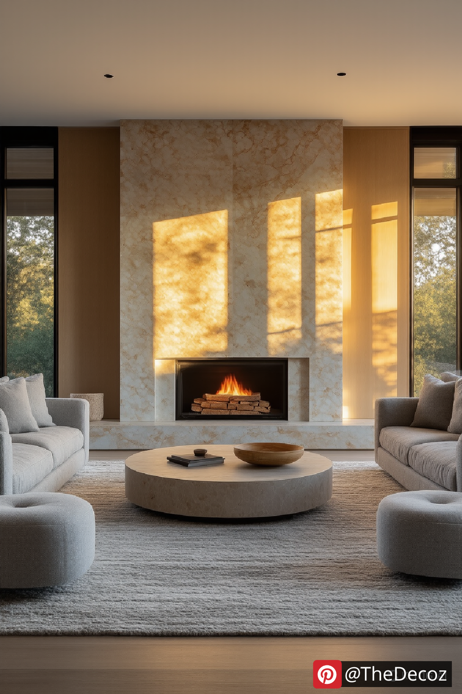
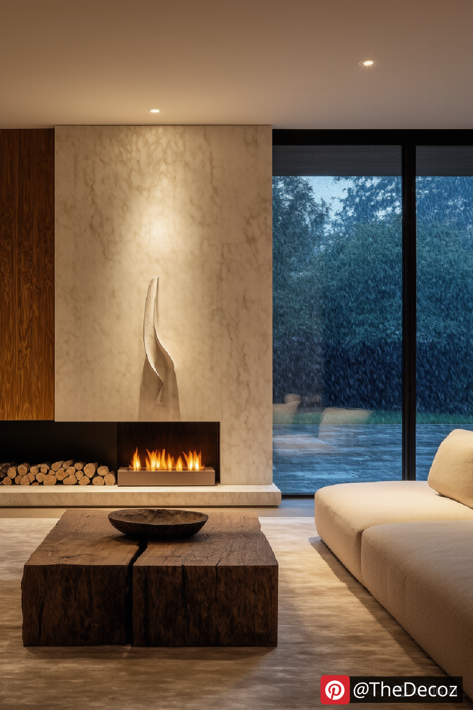
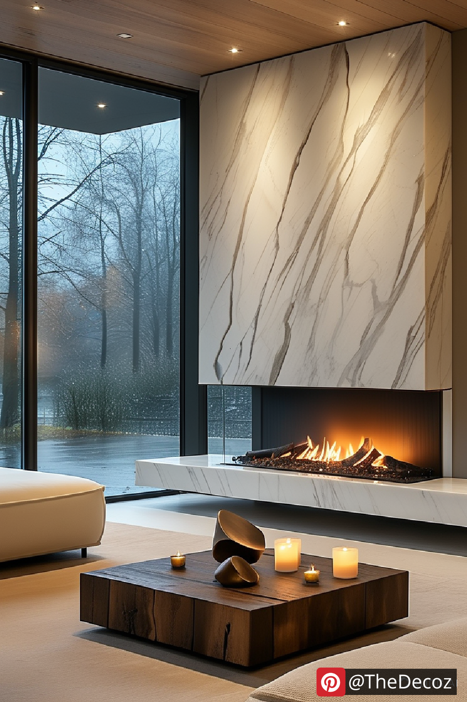
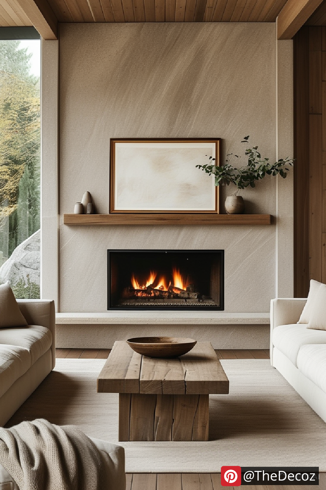

When it comes to elevating your home's ambiance, a well-designed living room decor fireplace can serve as both a visual masterpiece and a cozy haven. Whether you're renovating or just looking to refresh the space, the fireplace often acts as the room’s heart. In this guide, we’ll explore innovative and stylish ways to enhance your fireplace decor, making it a central feature of warmth and charm.
Before diving into the decorative elements, it’s essential to identify the style that best fits your personality and home design. From traditional brick hearths to sleek modern inserts, your fireplace style sets the tone for the entire living room. Consider elements like mantel design, surround materials, and whether you want a wood-burning, gas, or electric unit. Each style offers different aesthetics and functionality, so choose one that aligns with your lifestyle and taste.
The mantel above your fireplace is prime real estate for showcasing your creativity. Whether it’s adorned with vintage finds, family photos, or seasonal décor, the mantel allows you to express your style in a way that’s both temporary and transformative. Layer artwork, add greenery, or use mirrors to expand visual space and reflect light. Just ensure the display is balanced and doesn’t overpower the firebox below.
To avoid a flat or sterile look, use textures to bring your fireplace wall to life. Think stone, reclaimed wood, concrete, or tile — each material adds depth and character. Even painted brick can create an intriguing backdrop when combined with soft textiles in the rest of your living room. A tactile surface draws the eye and adds a sense of architectural sophistication.
Fireplaces are often framed by built-in shelves or custom cabinetry — an ideal solution for combining form and function. Use the space to store books, media, or decorative baskets, while styling open shelving with curated items that match the room's color palette. This integration allows your living room decor fireplace to serve both as a storage hub and a design highlight.
Don’t let your fireplace decor feel static. Make it part of your seasonal decorating ritual. Swap out accents like vases, garlands, candleholders, and art prints to reflect the current time of year. Not only does this keep the space feeling lively, but it also provides a budget-friendly way to update your interior without major renovations.
The hearth is more than just a platform — it’s an invitation. Add plush floor cushions, a cozy rug, or a pair of armchairs nearby to encourage gathering and relaxation. The goal is to make your fireplace a central spot where stories are shared, and memories are made. Soft lighting and layered textures can enhance the cozy atmosphere.
Color plays a powerful role in drawing attention to your fireplace. A bold accent wall, contrasting tile, or even a painted mantel can help the feature stand out. Alternatively, a monochromatic approach creates a seamless, modern look. Whichever direction you choose, make sure your color choices align with the broader living room decor for a cohesive feel.
Art is an effective way to personalize your living room fireplace decor. A large canvas or gallery wall above the mantel can add drama and personality. Mix in sculptural elements, candles, and plants to soften hard lines and add visual interest. The key is to create layers that feel intentional and authentic to your style.
In today’s smart homes, TVs are often mounted above the fireplace. To avoid visual competition, integrate the screen with the design by recessing it, framing it, or blending it with a gallery wall. You can also invest in a frame-style TV that displays art when not in use. This balance ensures that your living room decor fireplace remains stylish, not just functional.
A well-styled living room decor fireplace is more than a design trend — it’s a statement of comfort, personality, and hospitality. With the right combination of style, texture, color, and function, you can create a fireplace setting that not only enhances your living room but also becomes a cherished part of your home life. Whether you prefer rustic charm or sleek minimalism, let your fireplace tell your story.
   